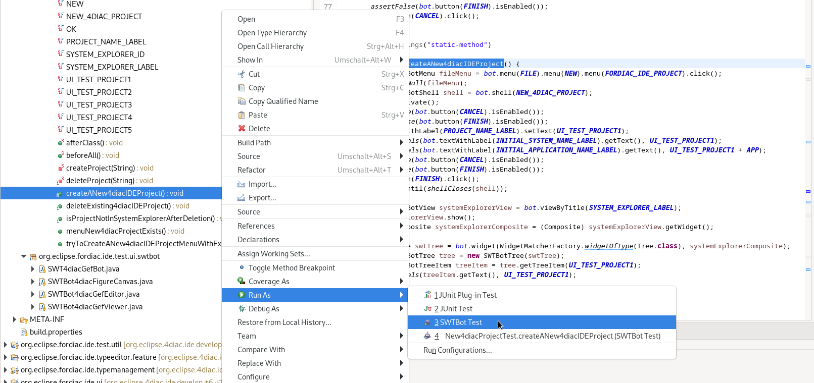
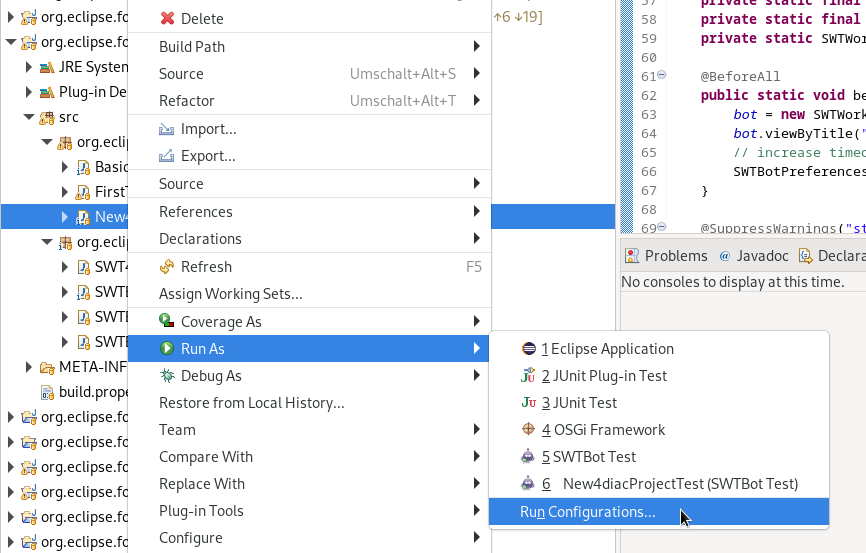
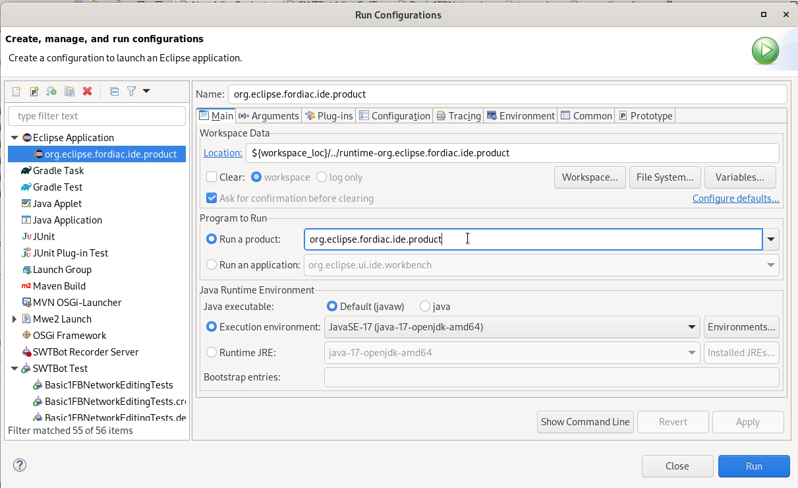
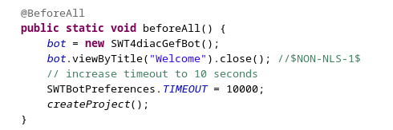
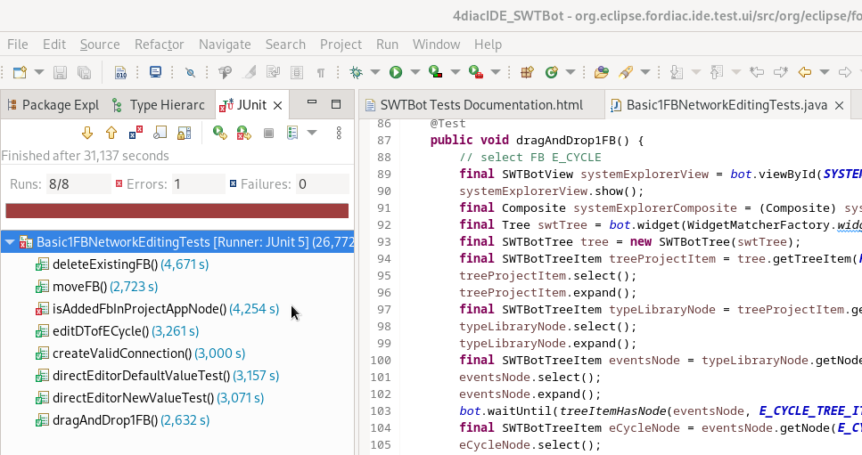

SWTBot Tests Documentation
Eclipse 4diac IDE User Interface Quality Improvement Through Automated Testing
Often open source projects have only a few contributors. These try to bring in all new ideas and improvements. However, this leaves little time for testing, which means that the quality of the software suffers. Since Eclipse 4diac, testing is also still done manually, which on the one hand is inefficient and on the other hand is often not done completely due to time constraints. For this reason, an automated test set for the 4diac IDE user interface would be a good improvement.
What is Eclipse SWTBot
Eclipse SWTBot™ is a Java based UI/functional testing tool for testing SWT and Eclipse based applications. SWTBot provides APIs that are simple to read and write. The APIs also hide the complexities involved with SWT and Eclipse. This makes it suitable for UI/functional testing by everyone, not just Eclipse developers. SWTBot also provides its own set of assertions that are useful for SWT. You can also use your own assertion framework with SWTBot. SWTBot can record and playback tests and integrates with Eclipse, and build technologies (Tycho, Ant) to make it easy to use in Continuous Integration.
Requirement
All SWTBot related files can be found in the 4diac IDE source code in the folder org.eclipse.fordiac.ide.test.ui.
In order to be able to perform advanced tests, the provided SWTBot classes were extended. For example, it became clear that with the standard classes of Eclipse SWTBot it is not possible to create connections in 4diac IDE. By default, drag and drop works by selecting the 1st pin and then jumping to the 2nd pin and selecting it. 4diac IDE unfortunately doesn’t work like that, mouse movement between selections is needed.
Therefore 4 extension classes were created, which can be found in the 4diac IDE source folder org.eclipse.fordiac.ide.test.ui.swtbot.
They are the classes SWT4diacGefBot, SWTBot4diacGefViewer, SWTBot4diacGefEditor, and SWTBot4diacFigureCanvas.
Test Set and Test Structure
In order to get a test administration, packages were created to provide a better overview. Each package has one or more testing classes. All test classes inherit from Abstract4diacUITest except for New4dacProjectTest which is independent because it requires a different @beforeAll method.
Ideas that have not yet been implemented ware collected in the corresponding test class with an empty method an a Javadoc.
Future tests are marked as @Disabled("until implementation").
The test structure can also be found in SWTBot Test Structure.
Execute SWTBot tests
Important: It has been noticed that you are not allowed to manually click the mouse during the automated execution of the tests, because it disturbs the bot and the tests fail as a result.
To run all tests of a class in the folder org.eclipse.fordiac.ide.test.ui, right click on the class → Run As → SWTBot Test.
To execute a single test method select the method and right click → Run As → SWTBot Test.

Create a new test class or test method
After a new class is added it is necessary to change the run configurations from Eclipse Platform to Eclipse 4diac to run the tests. The fastest way to do this is to +

In the window that appears, click on the Main tab and select to the right of Run a project the option org.eclipse.fordiac.ide.product.

In order to be able to run the tests individually, it is necessary to make the same setting with the individual test methods as well. However, it was noticed that sometimes the first 1-2 test runs do not go through despite these settings because the settings are reset to Eclipse platform. In this case, repeat the above steps.
The annotations for the tests are the same as in Junit5. The introduction to JUnit 5 can be read the introduction here
Settings that have to be executed in @BeforeAll
The test classes Basic1FBNetworkEditingTests and future test classes are structured in such a way that 4diac IDE is started first.
The beforeAll() method with the @BeforeAll annotation creates the bot and it closes the welcome window that appears when 4diac IDE starts.
This closing is important, otherwise the tests cannot be executed.
Settings such as timeout and playback speed are also set here.

Results and Evaluation of the tests
Starting the tests will bring up a new tab called JUnit. This provides information about which test was successful and which test failed. The example below shows that all but one of the tests have passed successfully. This means that the expected result has occurred. However, one test was unsuccessful. This test is interesting because it probably found an error in the program. A closer look at what went wrong is now necessary.
When creating a test, special care must be taken to ensure that the desired event is queried. This is the only way to rule out incorrect results due to incorrect tests. In our case, the test is correct, we found an error, the FB is actually not displayed in the hierarchy tree. Investigations revealed that the bug has already been reported, so no further action is necessary in this case.

Or Go to top